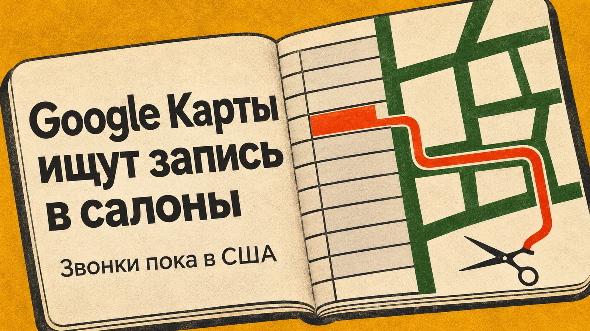
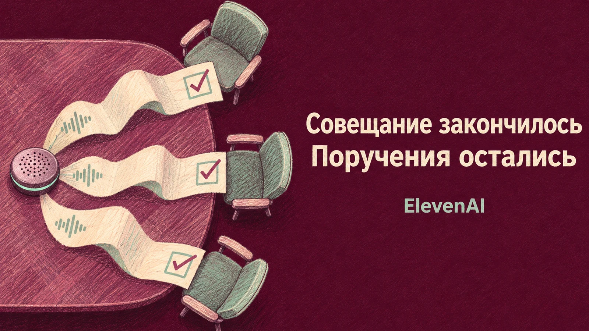

Приложения и сервисы
Пользовательские функции ChatGPT, Gemini, Claude и других приложений и сервисов.
28 ноября 2026

27 ноября 2026

Instagram научится ловить нейросети на воровстве чужих шуток и видеороликов
Новости ИИInstagram внедряет защиту авторских видео от копирования и готовится тестировать распознавание украденных монологов и шуток в роликах, созданных нейросетями.

Spotify разрешила музыкантам блокировать поддельные песни, выпущенные под их именем
Новости ИИМузыканты теперь могут запрещать публикацию композиций от своего имени без предварительного одобрения. Новая функция Spotify доступна всем исполнителям.

Google увеличила срок хранения переписки с Gemini с трёх дней до двух месяцев
Новости ИИGoogle увеличила срок хранения временных разговоров с Gemini с трёх дней до двух месяцев. Изменение затрагивает и пользователей с отключённой историей. Одновременно компания разделила настройки хранения переписок и обучения нейросетей.
25 ноября 2026

ИИ от Meta будет выбивать возвраты денег и торговаться с продавцами за британцев
Новости ИИMeta запустила в Великобритании персонального ИИ-агента Muse для покупок, возвратов денег, переговоров и бытовых поручений. Покупки требуют подтверждения пользователя; британские регуляторы начали сбор отзывов о персональных агентах.

МТС начала продавать зарубежные карты для оплаты нейросетей прямо из России
Новости ИИМТС начала продавать виртуальные долларовые карты иностранных банков за 5 990 рублей. Карта действует три года, пополняется через СБП и российские карты. Совместимость с конкретными зарубежными ИИ-сервисами требует проверки.

Халява кончилась: Google отключает дешевые подписки Gemini на 18 месяцев
Новости ИИВладельцы Google AI Pro по акции индийского оператора Jio жалуются на досрочное отключение подписок на 18 месяцев. При потере 5 ТБ облачного хранилища и превышении оставшейся квоты возникают ограничения Gmail и Google Диска.
24 ноября 2026

Поисковик Google теперь сможет заглянуть в ваш кошелёк
Новости ИИGoogle начала подключать Wallet к AI Mode: поисковый ИИ с разрешения пользователя сможет анализировать расходы и бонусы банковских карт. Доступ только на чтение.

GPT-6.2 наконец добралась до обычного ChatGPT
Новости ИИOpenAI начала развёртывание GPT-6.2 в обычном ChatGPT на Plus, Pro, Business и Enterprise. В основе — адаптированная GPT-6.2 Sol.
23 ноября 2026

Google научила ИИ делать Android-приложения, которые вас помнят
Новости ИИGoogle AI Studio получила интеграцию Firebase для Android-приложений: облачное хранение, вход через Google и защищённый доступ к Gemini. Установка через личную библиотеку Google Play доступна в США.
Canva добавила кнопку «Выключить ИИ»
Новости ИИCanva представила настройки AI Controls: на Free и Pro можно отключить генеративные инструменты и уменьшить количество ИИ-картинок в поиске. Некоторые средства редактирования продолжат работать.
21 ноября 2026

Signal запретил скриншоты, чтобы Siri и Gemini не читали ваши переписки
Новости ИИSignal усилил защиту переписок от системных ИИ-помощников: блокировка захвата экрана на iPhone и Android, ручные исключения Siri на Mac.

Google пустила Gemini за ваш Mac: ИИ сам работает в программах, пока вы заняты
Новости ИИGoogle начала открывать платным подписчикам в США функцию Computer Use в Gemini для Mac: ИИ управляет разрешёнными приложениями в отдельном виртуальном окне и требует подтверждения чувствительных действий.

OpenAI начала тестировать Dots в ChatGPT Plus: ИИ работает даже после закрытия чата
Новости ИИOpenAI 19 ноября начала ограниченное тестирование персональных ИИ-агентов Dots у части подписчиков ChatGPT Plus. Программа пока недоступна всем пользователям Plus и имеет возрастные и региональные ограничения.
19 ноября 2026

18 ноября 2026

Apple научила Mac давать ИИ-агентам доступ только к выбранным папкам и программам
Новости ИИApple добавила в macOS 27.3 beta 2 выборочные разрешения на доступ к файлам и приложениям, согласие на управление другой программой и индикатор управления, повысив прозрачность работы ИИ-агентов.

Grok Bot готовят к роли турагента: он сам заметит отмену рейса и предложит замену
Новости ИИSabre представила для Grok Bot коннектор бронирования перелётов и отелей с уведомлениями об отменах рейсов и снижении цен; готовится бета-версия.

Google Карты научились звонить в салоны и искать свободную запись. ИИ выходит в 30 стран Европы
Новости ИИGoogle расширила возможности Ask Maps: поиск свободной записи с помощью звонков компаниям, планирование путешествий и проверка сохранённых мест. Сам Ask Maps запускается ещё в 30+ странах Европы, а обзвон компаний пока доступен в США.
15 ноября 2026

ElevenLabs показала ИИ-секретаря, который раздаёт поручения после совещаний
Новости ИИElevenLabs анонсировала ElevenAI — голосового помощника для рабочих встреч: он готовит краткие итоги и поручения, понимает диктовку и подсказывает контекст во время звонков. Открыта регистрация на бесплатный ранний доступ.

Google придумала ИИ против вечного «куда пойдём?»
Новости ИИGoogle Labs представила Tabletop — экспериментальный сервис, который по описанию создаёт общие голосования, маршруты и другие интерактивные инструменты для друзей. Доступ пока через лист ожидания для жителей США от 18 лет.